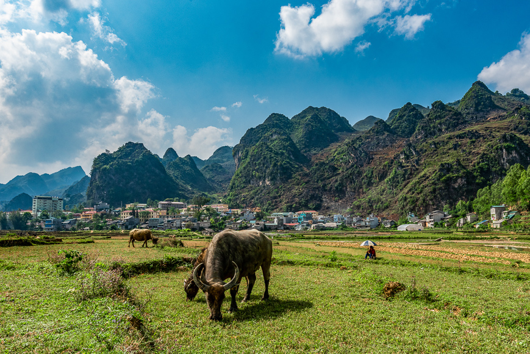
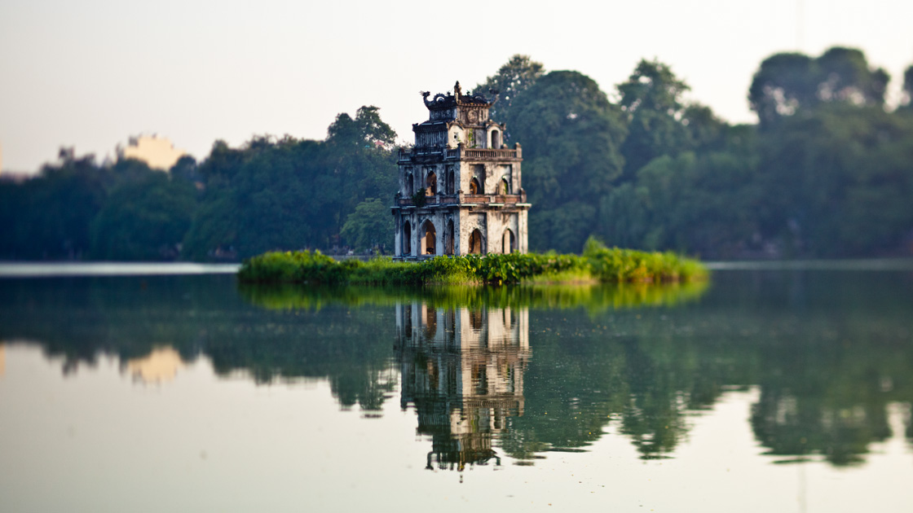
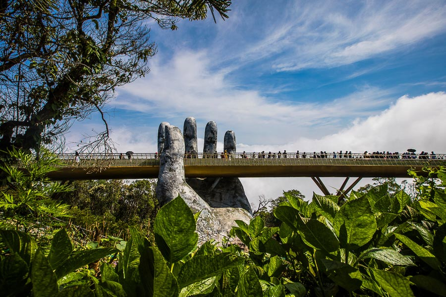
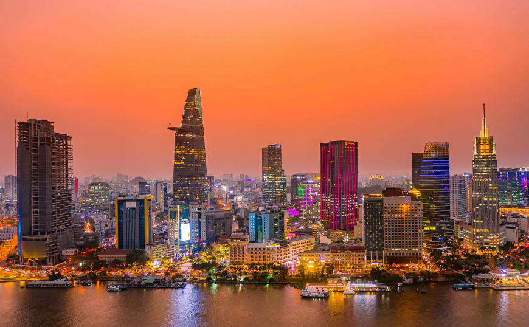
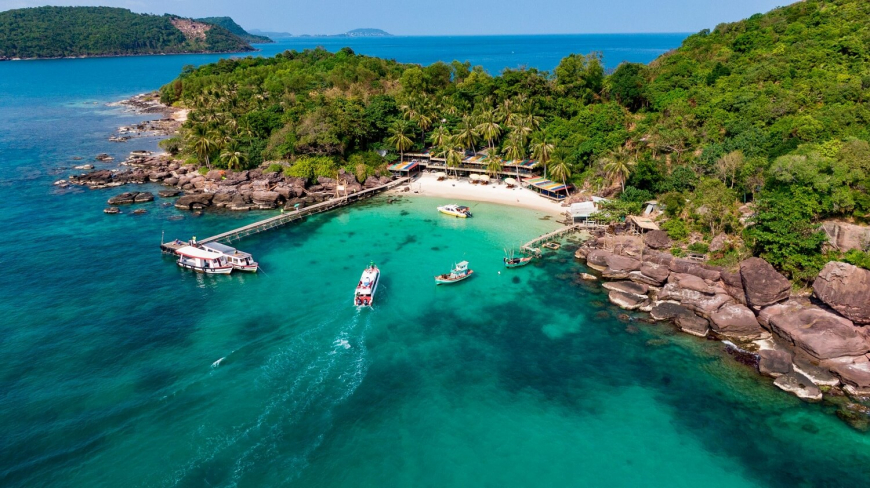

Vietnam Destinations
Ha Giang
Hà Giang is located in the far north and offers the most breathtaking mountain scenery in the country. It is famous for the Hà Giang Loop, a winding road that takes travelers through deep valleys, massive rocky peaks, and colorful rice terraces. It is an unforgettable destination for adventure seekers.

Ha Noi
As the capital of Vietnam, Hà Nội is a city rich in history and charm. The heart of the city is the Old Quarter, a lively area of narrow streets packed with small shops, historic temples, and endless motorbikes. It is also famous for its peaceful lakes, like Hoàn Kiếm Lake, where locals gather every morning.

Phong Nha Cave
Located in the UNESCO-listed Phong Nha-Kẻ Bàng National Park, this area is a dream for nature lovers and adventurers. It features some of the largest and most spectacular limestone caves in the world, filled with magnificent stalactites, underground rivers, and thick green jungles.

Da Nang
Đà Nẵng is a modern coastal city in central Vietnam known for its clean beaches and unique bridges. The most famous is the Golden Bridge, held up by two giant stone hands, and the Dragon Bridge, which breathes fire on weekends. It is a fantastic mix of city life, beautiful mountains, and relaxing resorts.

Ho Chi Minh City
Formerly known as Saigon, this is Vietnam’s largest and most energetic city. It is a bustling hub where modern skyscrapers sit right next to historic French colonial buildings. Visitors love exploring the lively street markets, visiting historic museums, and experiencing the exciting nightlife and coffee culture.

Phu Quoc Island
Phú Quốc is a tropical paradise located in the far south of Vietnam. This peaceful island is famous for its long, white-sand beaches, warm turquoise waters, and stunning sunsets. It is the perfect place for travelers who want to swim, sunbathe, or try fresh seafood at the local night market.
